この演習室のコンピュータは普通のパソコンですが，この講義は Windows ではなく Linux を使って進めます．実社会では Windows が９割以上を占めるため，その使い方について学ぶことは非常に重要ですが，この講義の目的はコンピュータの使い方を学ぶことではなく，Web というメカニズムを用いたサービスを提供する方法を学ぶところにあります．
この講義では，皆さんのコンピュータの使用経験にかかわらず，皆，同じスタートラインに立つものして進めます．したがって，
メモリとCPU
- メモリ
- コンピュータは計算をする機械ですが，そのためには計算の対象となるデータや計算の手順をどこかに覚えておく必要があります．そのための機構がメモリです．メモリの容量が大きいほど，たくさんのデータやプログラムを一度に扱えることになります．128MB（メガバイト）は 128×1024×1024 バイト，英字で１億３千万文字あまりを記憶できます．なお，Pentium, Celeloon, Athron, Duron, PowerPC などは，CPU に付けられたブランド名です．
- CPU
- CPU (Central Processing Unit: 中央演算処理装置) は，メモリから計算の手順やデータを取り出しながら計算を進め答えを求める，コンピュータの心臓部です．CPUの計算は一定のタイミングに沿って規則的に進められますが，そのタイミングは動作周波数（動作クロック）で決まります．一般に，この値が高いほど速く計算できることになります．1GHz（ギガヘルツ）は 109Hzです．
それぞれのパソコンはこの教室内のローカルエリアネットワーク (LAN) に接続され， 和歌山大学全体の LAN を通じて大学の外のネットワーク，いわゆるインターネットに（常時）接続されています． したがって，皆さんはこのコンピュータを使っていつでも自由にメール（電子メール，Eメール）を送ったり Web サーフィン（「インターネット」の「ホームページ」を「見る」こと）を行うことができます．もちろん，ワープロを使ってレポートを書いたり，自分の Web ページや CG を作ったりすることもできます．
皆さんがこのコンピュータ上で作成したファイル（データやプログラム等）は， LAN を介して別の場所にあるファイルサーバと呼ばれるコンピュータに保存されます． したがって，この教室のどのコンピュータを使っても， 以前に保存したデータやプログラムを取り出すことができます．また，メールはメールサーバに蓄えられます．
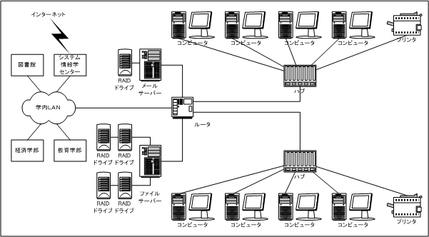
上図にある機器の説明
- RAID ドライブ
- 冗長構成をとることによって，装置の一部が故障してもデータは保全される記憶装置です．
- ハブ
- ネットワークの集線装置です．
- ルータ
- ネットワーク同士を相互に接続する交換機です．
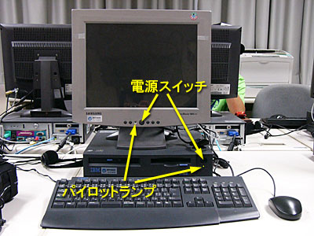
電源を入れると，最初にオペレーティングシステムの選択画面が現れます．
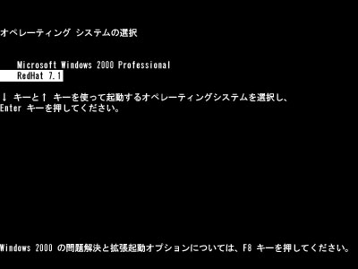
このまま何もせずにいれば Windows 2000 が起動してしまいますので，すぐに[↓]をタイプして RedHat 7.1 を選んでください．
コンピュータの起動に成功すると，次のようなログインウィンドウが現れます．もし Windows 2000 Professional を起動してしまったときは，[Ctrl] キーと [Alt] キーを同時に押しながら [Delete] キーをタイプ (Ctrl-Alt-Del) し， Windows 2000 のログインパネルから再起動を選んでください．
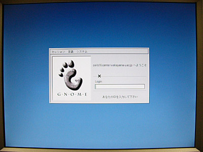
システム工学部情報通信システム学科・デザイン情報学科の学生の皆さんへの注意システム情報学センターの Linux (Red Hat Linux 7.1) は，システム工学部Ａ棟６０１・６０２号室の演習室の Linux (Vine Linux 2.6) との互換性が十分ではありません．そのため，システム工学部で Linux を使用したことがある場合，システム情報学センターでは Linux が正常に動作しない場合があります．また，これとは逆にシステム情報学センターの Linux を使用した場合も，その後にシステム工学部の Linux が正常に動作しなくなることがあります．
これを避けるためには，ユーザの初期設定ファイルを削除する作業が必要になります．それには，まず上のログインウィンドウの「セッション」で「failsafe」を選んでからログインしてください．するとターミナルのウィンドウが一つだけ開きますから，そこで次のコマンドを実行してください．"$" はプロンプトです．
$ \rm -rf .gnome* .sawfish*failsafe モードからログアウトするには，ターミナルのウィンドウでCtrl-Dをタイプするか，exit とタイプして改行してください．
オペレーティングシステムというソフトウェアには，大雑把に言って次の２つの役割があります．
コンピュータは CPU をはじめ，メモリ，ハードディスク，ディスプレイ，キーボード，マウスなど，数多くの部品で構成されています．このような部品や，その部品の集まりであるコンピュータの本体のことを，私たちはコンピュータのハードウェアと呼んでいます．私たちがコンピュータを使うときは，このハードウェアの機能をうまく組み合わせて動作させるための知識が必要になります．例えばワープロに１文字打ち込むという何でもない作業でも，コンピュータはタイプされたキーの文字が何であるかを調べ，それを画面に表示し，記憶している文書の中に挿入するという仕事をしています．つまり，こういった細々とした知識（手順）をコンピュータが知っているからこそ，利用者は自分の目的だけに専念して作業を進めることができるのです．このような知識のことを，私たちはコンピュータのソフトウェアと呼んでいます．
このソフトウェアのうち，利用者が実際に仕事をするために使うワープロなどのソフトウェアのことを，アプリケーションソフトウェアと呼びます．一方，コンピュータのハードウェア自体を制御したり，アプリケーションソフトウェアがハードウェアの機能を使うときに，その仲立ちをするための知識として働くソフトウェアのことを，「基本ソフトウェア」あるいは「オペレーティングシステム(OS)」と言います．
コンピュータの個々の部品や，それらが果たす機能（CPUなら計算する機能，メモリやディスクなら記憶する機能）は有限ですから（無限に速く計算することもできないし，記憶できる情報の量にも限界がある），これらは限りある資源のようなものです．したがって，このようなものをコンピュータの資源（リソース）と呼んだりします．
オペレーティングシステムは，この資源を効率よく使えるように管理するソフトウェアです．そしてオペレーティングシステムは，アプリケーションソフトウェアに対して，自分が管理しているハードウェアの機能を使用するための抽象化されたインタフェースを提供します．
キーボードのキーにはいくつかの種類があります．
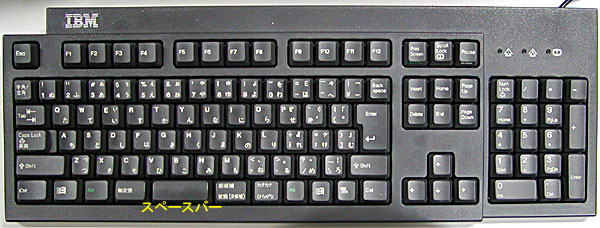
キーボードにはこのほかに矢印キーや種々のファンクションキーがありますが， それらに付いては適宜解説します．
Linux や UNIX 系オペレーティングシステムでは，コンピュータを利用するために，まずそのコンピュータのユーザアカウント（利用権）を取得する必要があります．皆さんのユーザアカウントは，既にシステム情報学センターから取得しているはずです．システム情報学センターの利用登録時に配布される「利用承認書」には，そのユーザアカウントを使用するための登録名（ユーザ名）と， その暗証番号（パスワード）が記載されています．
演習室のコンピュータを使用するには，まずそのユーザ名とパスワードを使って，ログインという作業を行う必要があります．それでは，皆さんのユーザ名（ログイン名）とパスワードを使ってコンピュータにログインしてください．なお，Windows を使う場合も同じユーザ名とパスワードを使用します．
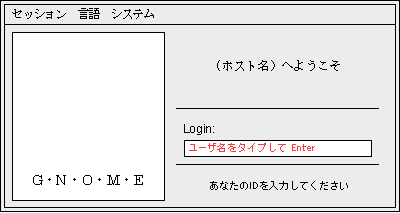
「Login:」の欄にユーザ名を入力します．承認書に書かれているユーザ名を， キーボードをタイプして入力してください．打ち間違えたときは，[Backspace]キーをタイプすれば１文字消すことができます．全部打ち終えたら [Enter] キーをタイプしてください． すると打ち込んだユーザ名が消えて，次にパスワードの入力を求めてきます．
今は「セッション」と「言語」を変更しないでください．
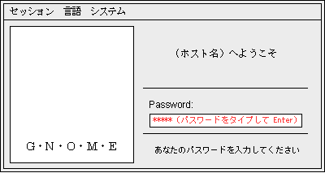
「Password:」の欄が現れたら，ここにはあなたのパスワードをタイプして入力してください．他人に見られないようにするために，タイプしたパスワードは画面には表示されません． 大文字をタイプするには [Shift] キーを押しながらその文字をタイプしてください．
ユーザ名やパスワードを打ち間違えたときユーザ名やパスワードを間違えると， 再度ユーザ名の入力画面が現れます．この場合はもう一度ユーザ名から入れなおしてください．
ログインに成功すると次のような画面が現れます．
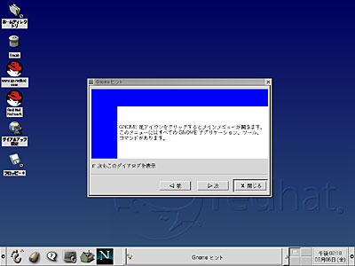
ログイン直後は「Gnome ヒント」というウィンドウが表示されます．コンピュータのしよう上のヒントが示されていますが，一読したら「閉じる」をクリックしてください．
マウスを机の上で滑らすように動かすと， それにつれて画面上の矢印（マウスカーソル，これは場合によって I や時計などいろいろ形を変えます）が動きます．このマウスを動かしてマウスカーソルを“目的地”の上に移動し，そこでボタンを押して，コンピュータの操作をします．
このボタンの押し方には，いくつかのパターンがあります．
コンピュータを起動すると，まずオペレーティングシステムが起動します． このオペレーティングシステムの重要な役割のひとつに， ディスプレイやキーボードなどの入出力装置の管理があります．特に最近のオペレーティングシステムでは， ディスプレイ上に複数の仮想的な画面（ウィンドウ，窓）を開いて複数の作業を同時にこなすことができる ウィンドウシステムを搭載することが一般的です．Microsoft の Windows や Apple の MacOS では，ウィンドウシステムはオペレーティングシステムに組み込まれていますが， この講義で使う Linux や Unix では MIT（マサチューセッツ工科大学）で開発された X Window System というオペレーティングシステムとは独立したソフトウェアがよく使用されます．
ターミナルなどのウィンドウシステムに対応したアプリケーションソフトウェアは，自分が行おうとする画面表示をウィンドウシステムに対して要求します．ウィンドウシステムは，この要求に基づいて画面表示を行います．したがってウィンドウシステムは，お客の要求に応じて食事を出すサーバ（給仕）のような役割を果たします．これに対してアプリケーションソフトウェアは，サーバに対して要求を出すクライアント（客）のような位置付けになります．このようなソフトウェアの形態を，サーバ・クライアントモデルと呼びます．
X Window System では，画面表示用のハードウェア（ビデオカード等）を制御するソフトウェアのことを X サーバ，X サーバに対して画面表示を要求するソフトウェアのことを X クライアントと呼びます．X Window System における X サーバと X クライアント間の通信はネットワークに対して透過的であり，ある X クライアントの画面表示を，LAN 等を介して他のコンピュータ上で稼動している X サーバに出力することができます．
画面の左下には，多分，以下のような絵記号の列が描かれていると思います．このようにシンボル化されたオブジェクト（対象）を一般にアイコン（図記号・絵記号）と呼びます．画面の下部のアイコンが並んでいる場所は，ここではパネルと呼んでいます．
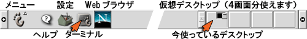
では，この中のターミナルのアイコンをマウスの左ボタンでクリックしてみてください．すると，下のような「ウィンドウ」が現れると思います．以降，特に断らない限り，「クリックする」と指示された時にはマウスの左ボタンを使ってください．
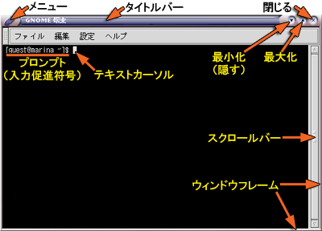
ターミナルは，gnome-terminal というアプリケーションソフトウェアです．この中でさらにシェルと呼ばれるプログラムが稼動しています．シェルはプロンプト（入力促進符号）を表示して，利用者がコマンド（指令）を入力するのを待っています．
このウィンドウの周囲の枠はターミナル自身のものではなく，ウィンドウマネージャという別のソフトウェアが付けています（スクロールバーはターミナル自身のものです)．
ウィンドウを開くと，画面の下部にあるパネルの中にあるタスク・リストに，そのウィンドウを示すボタンが現れます（下図はタスクリストを画面の上部に置いています）．選択されているウィンドウ（利用者の操作の対象になっているウィンドウ）に対応するボタンは「へこんで」表示されます．隠されたウィンドウに対応するボタンは「グレー」になっています．このボタンをクリックして操作するウィンドウを切り替えたり，ウィンドウを隠したりできます．
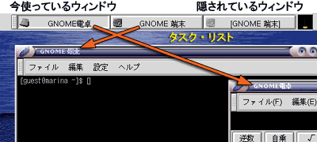
ウィンドウマネージャはウィンドウシステム上の個々のウィンドウを管理し，マウスの操作などの情報をウィンドウシステムやアプリケーションソフトウェアに伝達します．ウィンドウを移動したり，ウィンドウのサイズを変えたり，ウィンドウを閉じたりする操作は，このウィンドウマネージャによって実現されています．
X Window System ではウィンドウマネージャがウィンドウシステムやオペレーティングシステムから独立しているために，ウィンドウマネージャやデスクトップ環境が交換可能です． これらを別のものに交換することによって， コンピュータの画面の見かけや操作方法を全く異なるものに変更することができます．この講義では sawfish というウィンドウマネージャを使用しています．
デスクトップ環境についてデスクトップ環境とは，画面の背景部分やメニューなどを管理するソフトウェアです．Linux で使われる代表的なものに，GNOME と KDE (K Desktop Environment) があります．sawfish は GNOME と組み合わせて使われるウィンドウマネージャです．
ウィンドウマネージャやデスクトップ環境の切り替えは，ログインウィンドウの「セッション」のメニューで行います．最初は GNOME が選択されており， この講義も GNOME を前提にしています．もし他のものを選択した場合は，一旦ログアウトして GNOME に戻すか，自分の選択したものを自分で勉強して使ってください．
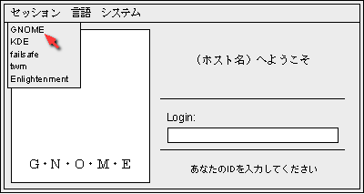
ウィンドウを移動するには，次の２つの方法があります．
ウィンドウのサイズを変更するには，次の２つの方法があります．

他のウィンドウで隠されてしまったウィンドウを前面に出すには，次の２つの方法があります．
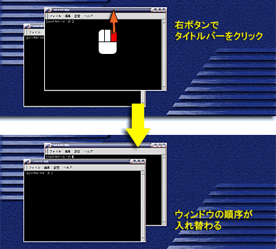
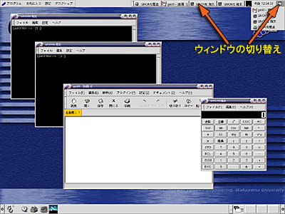
手前にあるウィンドウを奥に送って隠れているウィンドウを表に出す方法は，前節の２と同じです．
ウィンドウを最小化するには，「最小化」ボタンをクリックしてください．

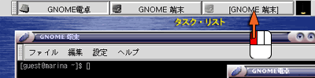
ウィンドウを最大化するには，「最大化」ボタンをクリックしてください．

タイトルバーをダブルクリックすると，ウィンドウがを折りたたまれます．
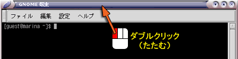
次の２つの方法があります．


タイトルバーの左端隅をクリックしたり，「閉じる」ボタンや「最小化」ボタンをマウスの右ボタンでクリックすると，ポップアップメニューが現れます．

ポップアップメニューからはこれまでに述べたウィンドウ操作のほか，より高度な操作が行えるようになっています．
X Window Ssytem 上で動作しているアプリケーションソフトウェアが通常の方法では終了できなくなったり，「閉じる」ボタンをクリックしてもウィンドウが閉じなくなったときは，強制終了することができます．
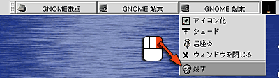
インターネットの代名詞でもある WWW (World Wide Web) を 参照するソフトウェアを Web ブラウザと言います． これには Windows に組み込まれている Internet Explorer が最もよく使われていますが，その Linux 用のものは（今のところ）ありません．代わりに Linux 上では，オープンソースで開発が進められている Mozilla をはじめ，Mozilla を軽量化した FireFox，Mozilla をベースに GNOME 標準のユーザインタフェースを付けた Galeon，KDE上で開発されている Konqueror，テキストベースの lynx や w3m，テキストエディタ Emacs の中で動く w3，それにファイルマネージャである Nautilus など，さまざまなものがあります．この講義では Mozilla を使用します．
システム情報学センターの Netscape はバージョンが非常に古いので，この講義では使用できません．
「ターミナル」を開いて，mozilla とタイプして改行してください．すると Mozilla が起動します．はじめて Mozilla を起動するときは，ちょっと時間がかかります．
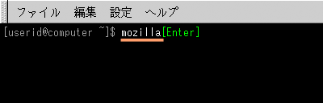
Mozilla を使うにあたり，いくつか初期設定を行っておく必要があります．まず最初に，メニューバーの「編集 (Edit)」メニューから「設定 (Preference)」を選んでください．
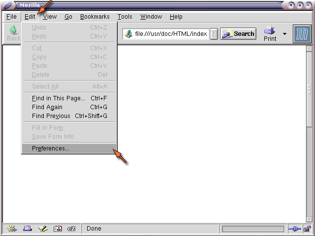
すると，下のようなダイアログウィンドウが現れます．
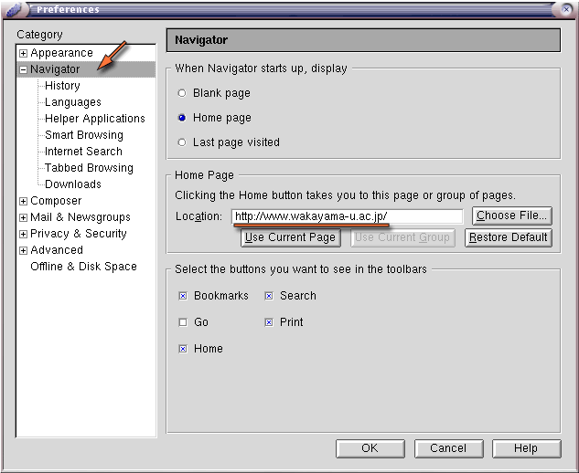
左側の「カテゴリ (Category)」では「Navigator」が選択されているはずです．この「場所 (Location)」の欄に和歌山大学のホームページの "URL を設定してください．URL とは Universal Resouce Locator の略で，Web ページのインターネット上における場所を表します．
| 和歌山大学ホームページ URL |
|---|
| http://www.wakayama-u.ac.jp/ |
URLとURIWebページの場所は一般的に URL と呼ばれますが，現在ではより広義の URI (Universal Resource Identifier) が用いられています．なお「ホームページアドレス」などという言い方は，ちょっと恥ずかしい感じがします．
左側の「カテゴリ (Category)」という枠の中の「詳細 (Advanced)」の左にある「＋」マークをクリックしてください． その下に下層のメニューが広がります．
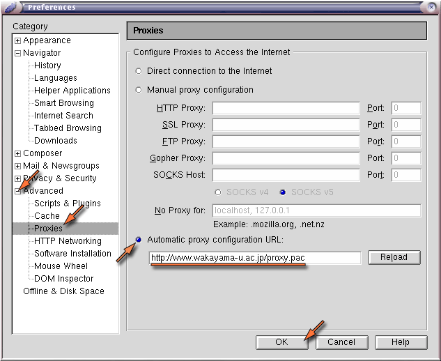
現れたメニューの中から「プロキシ (Proxies)」を選択し，「自動プロキシ構成 (Automatic proxy configuration) URL:」を選択した後，その下の欄に，以下の内容を設定してください．
| 自動プロキシ構成 URL |
|---|
| http://www.wakayama-u.ac.jp/proxy.pac |
最後に「OK」をクリックしてください．
プロキシサーバについてWeb ブラウザ（クライアント）が Web サーバに対して見たい Web ページを要求すれば，Web サーバはそのページのデータを Web ブラウザに送信します．上記の設定は，この閲覧要求を相手の Web サーバに直接送る代わりに別のプロキシ (Proxy, 代理) サーバに送り，Web サーバとのやり取りを中継してもらいます．和歌山大学のプロキシサーバには，複数のコンピュータから同じサーバにアクセスがあったときにデータを共有するキャッシュサーバの機能と，Webページを通じて悪意のあるプログラム等が侵入することを防ぐ機能を提供しています．
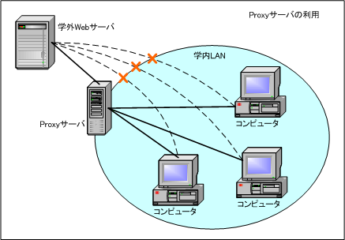
和歌山大学のホームページを開いてみましょう（もしかしたら既に「ホーム」に設定されているかもしれません）．メニューバーの「ファイル (File)」メニューから「Webの場所を開く (Open Web Location)」を選ぶか，Ctrl-Shift-L をタイプしてください．
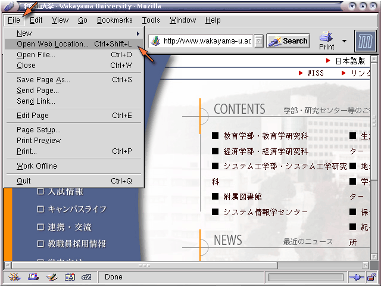
すると，次のようなウィンドウが現れます．ここに以下の URL（この講義資料がある場所）を指定して，「開く (Open)」をクリックしてください．
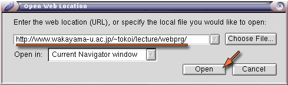
この講義資料が Web ブラウザに表示されます．今後はこの Web ページを使って講義を進めます．
| 講義資料 URL |
|---|
| http://www.wakayama-u.ac.jp/~tokoi/lecture/webprg/ |
なお，上の URL に含まれる 「~」（チルダ）という文字を入力するには，[Shift] を押しながら [Backspace] の左側にある "0" のキーあるいは "^" のキーをタイプしてください．
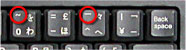
"~"（チルダ）の字形について"~" は画面表示に使う字体（フォント）によって，上の方にあったり，波線だったり，直線だったりしますが，これは自体によって字形が異なっているだけです．
ブックマークは， よく参照するページを覚えておく機能です．現在，この講義の Web ページが表示されていると思いますから，これをブックマークに登録しておいてください．
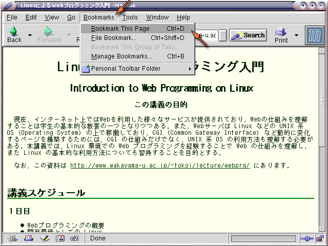
ブックマークのボタンをクリックすると， 登録されている Web ページの一覧が現れます．この一覧の一番上の「このページにブックマークを付ける (Bookmark This Page)」を選ぶか Ctrl-D をタイプしてください．
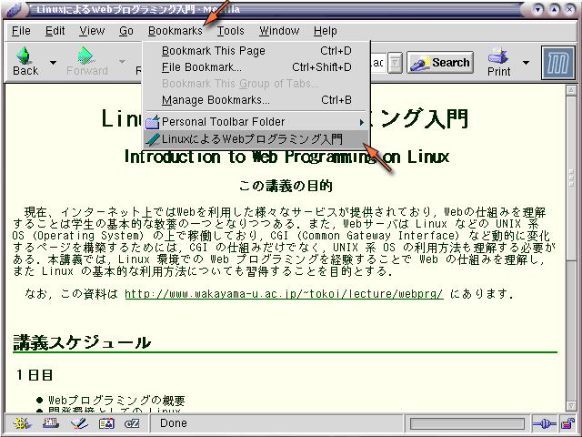
すると，この一覧の一番下に現在表示されているページが登録されます．以降はこれを選ぶだけで， すぐこのページを表示することができます．
すでにいくつかのブックマークが登録されていますが，日本からでは使いようのないものも結構あるので，必要に応じて自分で整理してください．「ブックマークの管理 (Manage Bookmarks)」を選ぶか Ctrl-B をタイプすれば， ブックマークの管理ウィンドウが現れます．
自分の見たいページを探すには，サーチエンジンと呼ばれる Web ページを利用します． インターネット上には多くのサーチエンジンがありますが，これらはおおまかに次の２つのタイプに分類することができます．
ディレクトリ型は人手によって整理されているために，無駄な情報が少なく興味のあるカテゴリのページを見つけやすいという特徴がありますが，その分，漏れや更新の遅れが大きいと考えられます．
全文検索型は Web ページに含まれるキーワードを機械的に抜き出してデータベースを構築するので，漏れが少なく更新も早いと考えられますが，検索結果の中から本当に必要な情報をすばやく見つけるには多少の経験が必要です．
ただし，最近はこれらを含むほとんどのところで，ディレクトリ型と全文検索型の両方の機能を持たせています．また複数のサーチエンジンを横断して検索できる「メタサーチ」と呼ばれるものもありますが，ここでは割愛します．これらのほかに，音楽専門サーチエンジンのようにターゲットを絞ったものとか，人力検索サイト「はてな」など，多様なものがあります．
コンピュータの使用が終わったら， コンピュータにログインする前の状態に戻します．画面の左下にある「足跡」のアイコンをクリックして，現れたメニューの中から「ログアウト」を選択してください．
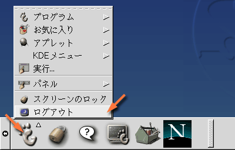
次に，「本当にログアウトしますか？」というウィンドウが現れますので，「はい」をクリックするか，[Enter] キーをタイプしてください．これでログアウト完了です．
なお，電源を切る場合は，ログインウィンドウの「システム」のメニューの中から「停止」を選択して「はい」をクリックしてください．そのあとディスプレイの電源を切ってください．
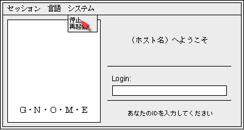
パソコンを使った作業は，それなりに疲れます．「VDT作業について」を参照してください．